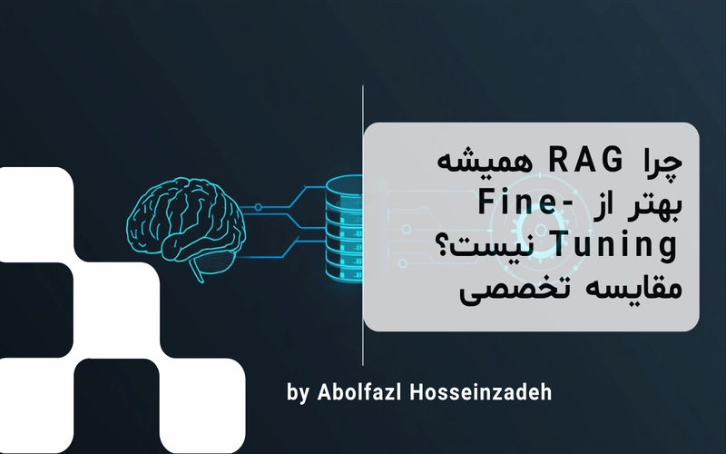

چرا RAG همیشه بهتر از Fine-Tuning نیست؟
در این مقاله به بررسی عمیق و تخصصی تفاوتهای ساختاری میان دو رویکرد RAG (تولید با بازیابی کمکی) و Fine-Tuning (تنظیم دقیق) میپردازیم.
ادامه مطلببروزترین مقالات و تجربیات من در دنیای تکنولوژی

در این مقاله به بررسی عمیق و تخصصی تفاوتهای ساختاری میان دو رویکرد RAG (تولید با بازیابی کمکی) و Fine-Tuning (تنظیم دقیق) میپردازیم.
ادامه مطلب
در این مقاله جامع، به تحلیل عمیق مهندسی هر یک از این سه فناوری، نقش واقعی آنها در پشته نرمافزاری و نحوه ترکیب آنها برای ساخت سیستمهای هوشمند مقیاسپذیر میپردازیم.
ادامه مطلب